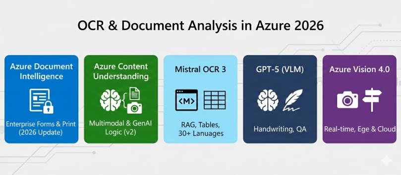

Document Intelligence vs. Content Understanding vs. Mistral OCR 3 vs. GPT-5 vs. Azure Vision
Extracting data from documents is no longer just about “reading” text—it’s about intelligent understanding. Whether you’re digitizing 10,000 invoices, building a real-time app to read street signs, or preparing scientific papers for RAG pipelines, Azure offers a specialized toolkit within its Foundry ecosystem.
In this post, we’ll dive deep into performance, pricing, and capabilities of the leading OCR models in Azure—including the brand-new Mistral OCR 3 and VLM-based approaches with GPT-5.

The Contenders: Azure’s OCR Portfolio 2025
Azure has evolved its OCR offerings into five strategic pillars, each optimized for different workloads:
- Azure Document Intelligence: The battle-tested veteran for structured and semi-structured documents (invoices, forms, IDs). Still leading for printed text.
- Azure Content Understanding: The new multimodal powerhouse (GA since November 2025) that combines OCR with generative AI—handling documents, images, audio, and video.
- Mistral OCR 3: The brand-new state-of-the-art model (December 2025) with a 74% win rate over its predecessor—specifically designed for enterprise-grade OCR with Markdown output.
- GPT-5 / VLM Approaches: Vision Language Models as game-changers—especially strong for handwriting and complex document QA workflows.
- Azure Vision (v4.0): Optimized for “in-the-wild” images like posters or labels via a fast, synchronous API.
1. Performance: Who’s the Accuracy King?
When it comes to raw accuracy, the “best” model depends heavily on your document type. Here’s the current benchmark landscape:
Printed Text
Azure Document Intelligence remains the market leader here, achieving the highest scores in independent benchmarks. For standard forms and clean printed documents, it’s the safest choice.
Multilingual & Tables
Mistral OCR 3 dominates at global scale: 99%+ accuracy across 25+ languages (including German, French, Chinese, Arabic, Hindi) and significantly outperforms standard Azure OCR and GPT-4o in complex table extraction. Benchmarks show 96.6% on tables vs. Textract’s 84.8%.
Handwriting – The Biggest Differentiator!
This is where it gets interesting. Benchmark results vary depending on the test set:
- GPT-5 leads in independent benchmarks for complex handwriting recognition
- Mistral OCR 3: 88.9% accuracy (vs. Azure’s 78.2% in Mistral’s internal tests)
- Azure Document Intelligence: Weaker on pure handwriting, but strong on printed/handwritten mixes
Speed
Mistral OCR 3 is built for velocity, processing up to 2,000 pages per minute on a single node. Azure Vision 4.0 is the choice for real-time UIs where low-latency synchronous responses are required.
⚠️ Important Note: Mistral’s benchmarks are “internal”—conducted by the vendor themselves. Independent comparisons using identical test sets are still lacking. Running your own tests with your document types is essential!
2. Capabilities: Beyond Text Extraction
If you just need raw text, any model works. But if you need intelligence, the field narrows. For production pipelines, pair that intelligence with Azure AI Content Safety so downstream agents can filter risky or policy-violating outputs.
Azure Document Intelligence – The Structure Specialist
Doesn’t just give you text—it identifies paragraphs, titles, section headings, and selection marks. Offers pre-built models for specific forms (US Unified Tax, Identity Documents). Ideal when you have fixed, known document types.
Azure Content Understanding – The Logic Layer
- Can generate derived fields—e.g., calculate total tax even if it’s not explicitly written in the document
- Supports multi-file input—validate data across different documents in a single request
- New: Pro mode with reasoning and external knowledge base integration
- Multimodal: Documents, images, audio, video in one service
Mistral OCR 3 – The RAG Optimizer
- Output in Markdown format—massive advantage for RAG pipelines and LLM downstream processing
- HTML-based table reconstruction with colspan/rowspan support
- LaTeX formatting for equations and scientific papers
- Extracts embedded images alongside text
GPT-5 / VLMs – The Reasoning Machines
- Best choice for Document QA: OCR + reasoning in one step
- According to recent studies: VLMs like GPT-5 Mini deliver higher accuracy at lower costs than pure OCR services for complex document intelligence workflows
- Strong on unstructured, visually complex documents
- But: Slower (16-33 seconds per page vs. 2-4 seconds for Azure)
3. Pricing: Tokens vs. Managed Services
Pricing models in Azure Foundry are becoming increasingly flexible. For a practical example of applying these services in a paperless-office workflow, see this Document Manager using Azure AI Foundry or OpenAI:
| Service | Pricing Model | Cost (approx.) |
|---|---|---|
| Document Intelligence | Page-based (tiers) | ~$10 / 1,000 pages |
| Content Understanding | Token-based + PTU option | Pay-as-you-go |
| Mistral OCR 3 | Page-based via Marketplace | $2 / 1,000 pages ($1 batch) |
| GPT-5 (VLM) | Token-based | ~$10 / 1,000 pages |
| Azure Vision 4.0 | Transaction-based | Low (basic OCR) |
💡 Pro Tip: Mistral OCR 3 offers the best price-performance ratio at $1/1,000 pages (batch) for high-volume document digitization.
Comparison Overview at a Glance
| Feature | Doc Intelligence | Content Underst. | Mistral OCR 3 | GPT-5 VLM | Vision 4.0 |
|---|---|---|---|---|---|
| Best For | Standard Forms | Complex/Multimodal | RAG Pipelines | Document QA | Real-time |
| Printed Text | ⭐⭐⭐⭐⭐ | ⭐⭐⭐⭐ | ⭐⭐⭐⭐ | ⭐⭐⭐⭐ | ⭐⭐⭐⭐ |
| Handwriting | ⭐⭐⭐ | ⭐⭐⭐⭐ | ⭐⭐⭐⭐ | ⭐⭐⭐⭐⭐ | ⭐⭐⭐ |
| Tables | ⭐⭐⭐⭐ | ⭐⭐⭐⭐ | ⭐⭐⭐⭐⭐ | ⭐⭐⭐ | ⭐⭐ |
| Multilingual | ⭐⭐⭐⭐ | ⭐⭐⭐⭐ | ⭐⭐⭐⭐⭐ | ⭐⭐⭐⭐⭐ | ⭐⭐⭐ |
| Speed | Fast | Medium | Very Fast | Slow | Very Fast |
| Output | JSON | JSON + Reasoning | Markdown/HTML | Flexible | JSON |
| Reasoning | ❌ | ✅ Native | ❌ | ✅ Best | ❌ |
The Verdict: Which Model for Which Use Case?
📄 Azure Document Intelligence → Fixed form types (insurance claims, ID cards, invoices) requiring reliable, high-accuracy extraction with confidence scores
🧠 Azure Content Understanding → “Messy” documents, wildly varying formats, when logic (calculating, summarizing) needs to be part of the extraction process, or multimodal workflows
🚀 Mistral OCR 3 → Global, multilingual datasets, converting massive amounts of scientific/technical PDFs to Markdown for AI agents, high-volume processing with best price-performance ratio
🤖 GPT-5 / VLM Approach → Complex document QA where OCR + reasoning is needed in one step, best handwriting recognition, unstructured documents
📱 Azure Vision 4.0 → Mobile apps that need to read signs or product labels instantly—lowest latency, synchronous API
Pro Tips for Real-World Implementation
- Test a hybrid approach: GPT-5 Mini + an OCR layer (e.g., Azure Read) can deliver better results for complex QA workflows than pure OCR services alone.
- Test PDF vs. JPEG: Developers report that high-resolution JPEGs sometimes yield better table extraction than direct PDF submission with Mistral OCR.
- Consider DeepSeek OCR for on-prem: If self-hosting or privacy requirements are important, DeepSeek OCR (October 2025) is a relevant alternative.
- Use the Batch API: Mistral OCR 3 offers a 50% discount for batch processing—ideal for archive digitization projects.
- Run your own benchmarks: Vendor benchmarks are self-reported. Test with your actual documents!
💡 Think of picking an OCR model like choosing a specialized lens for a camera: a macro lens for the fine print of a contract, a wide-angle lens for complex multimodal reports, and a telephoto lens when you need to reason about what you’re seeing from a distance.
For a modern AI agent, the combination of Mistral OCR 3 (for fast, affordable bulk extraction) + Azure Content Understanding (for reasoning) or GPT-5 (for complex QA) is the most future-proof choice.